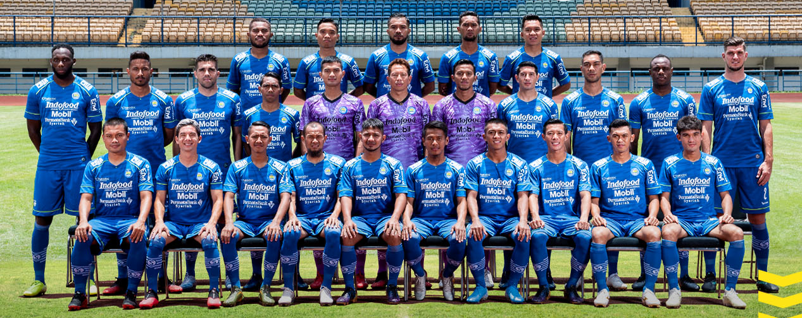
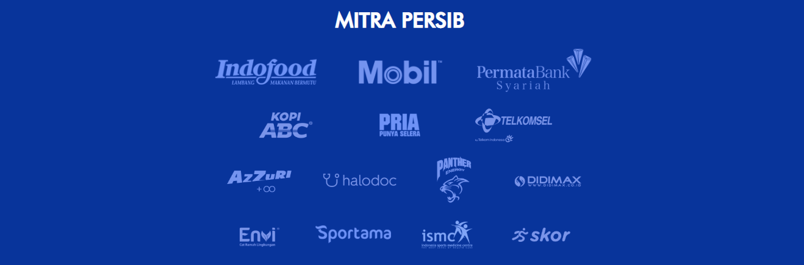
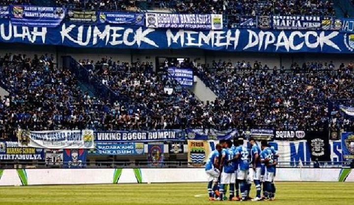

PT Liga Indonesia mewajibkan klub yang mengikuti Kompetisi Liga Super 2009-2010 mengubah statusnya menjadi badan hukum (profesional). Hal itu sebagai konsekuensi dari titel kompetisi Liga Super, dimana mereka (klub) bukan berstatus lagi amatir. Di lain pihak, klub berstatus profesional dilarang menggunakan dana APBD (Anggaran Pendapatan dan Belanja Daerah), sesuai dengan Peraturan Menteri Dalam Negeri (Permendagri) Nomor 13/2006 yang direvisi menjadi Permendagri Nomor 59/2007.
Dengan adanya Permendagri itu, klub tidak boleh lagi menerima dana dari APBD berupa hibah dan bantuan sosial secara berulang. Padahal, saat itu Persib sangat mengandalkan dana dari APBD untuk mengikuti kompetisi. Kondisi itu yang membuat 36 Persatuan Sepakbola (PS) sebagai pemilik Persib, sepakat memberikan mandat kepada Walikota Bandung H Dada Rosada untuk menyelamatkan Persib agar tetap bisa mengikuti kompetisi.
Pada tanggal 20 Agustus 2009 di Pendopo Kota Bandung, Dada melakukan pertemuan dengan melibatkan elemen sepakbola di Bandung, seperti pengurus Persib, mantan pemain Persib, pengamat sepakbola, bobotoh, pejabat pemerintahan Kota Bandung, untuk membicarakan masa depan Persib yang harus berubah menjadi badan hukum. Ada empat nama perusahaan yang disodorkan peserta pertemuan, yakni PT Persib Maung Bandung, PT Persib Bandung Bermartabat, PT Persib Pangeran Biru, dan PT Persib Bandung Raya. Setelah diadakan musyawarah, semua sepakat memilih nama PT Persib Bandung Bermartabat.
Sejarah
Sebelum hadirnya Persib Bandung, di Kota Bandung berdiri klub sepakbola Bandoeng Inlandsche Voetbal Bond (BIVB) pada sekitar tahun 1923. BIVB ini merupakan salah satu organisasi perjuangan kaum nasionalis pada masa itu. Tercatat sebagai Ketua Umum BIVB adalah Mr. Syamsudin yang kemudian diteruskan oleh putra pejuang wanita Dewi Sartika, yakni R. Atot. Atot pulalah yang tercatat sebagai Komisaris Daerah Jawa Barat yang pertama. BIVB memanfaatkan lapangan Tegallega di depan tribun pacuan kuda. Tim BIVB ini beberapa kali mengadakan pertandingan di luar kota seperti Yogyakarta dan Jatinegara, Jakarta.
Pada tanggal 19 April 1930, BIVB bersama dengan VIJ Jakarta, SIVB (Persebaya), MIVB (PPSM Magelang), MVB (PSM Madiun), VVB (Persis Solo), dan PSM (PSIM Yogyakarta) turut membidani kelahiran PSSI dalam pertemuan yang diadakan di Societeit Hadiprojo Yogyakarta. BIVB dalam pertemuan tersebut diwakili oleh Mr. Syamsuddin. Setahun kemudian kompetisi tahunan antar kota/perserikatan diselenggarakan.
BIVB kemudian menghilang dan muncul dua perkumpulan lain yang juga diwarnai nasionalisme Indonesia yakni Persatuan Sepak bola Indonesia Bandung (PSIB) dan National Voetball Bond (NVB). Pada tanggal 14 Maret 1933, kedua perkumpulan itu sepakat melakukan fusi dan lahirlah perkumpulan yang bernama Persib yang kemudian memilih Anwar St. Pamoentjak sebagai Ketua Umum. Klub-klub yang bergabung ke dalam Persib adalah SIAP, Soenda, Singgalang, Diana, Matahari, OVU, RAN, HBOM, JOP, MALTA, dan Merapi.
Fasilitas Stadion dan Mess
Persib sempat menggunakan lapangan-lapangan di kota Bandung seperti di Ciroyom dan Tegallega untuk bermain di era awal berdirinya. Stadion Sidolig (yang kini bernama Stadion Persib) mulai digunakan setelah terjadi merger klub-klub lokal seperti UNI, SIDOLIG dan VBBO. Setelah itu, Persib bermarkas di Stadion Siliwangi hingga dekade 2000an.
Pada Liga Super Indonesia 2008, Persib terpaksa harus meninggalkan Stadion Siliwangi setelah terjadi kerusuhan ketika menjamu Persija Jakarta pada pekan kedua. Ditambah situasi politik yang sedang memanas akibat berlangsungnya Pemilu 2009, Kepolisian Kota Bandung tidak lagi mengeluarkan surat izin menyelenggarakan pertandingan di Stadion Siliwangi bagi Persib. Sebagai alternatif, dipilihlah Stadion Si Jalak Harupat, Soreang, Kabupaten Bandung, sebagai "home-base" hingga akhir musim kompetisi.
Untuk lapangan latihan, Persib menggunakan Stadion Persib di Jl. Ahmad Yani. Di stadion tersebut terdapat lapangan latihan dengan rumput baru dan trek berlari serta di sampingnya terdapat mess untuk tempat tinggal para pemain dan staff Persib serta untuk kantor. Letak Stadion Persib yang berada di Jl. Ahmad Yani yang merupakan pusat keramaian juga membuat istirahat para pemain terganggu dan mudahnya para bobotoh untuk masuk ke dalam stadion.
Selain Stadion Persib, Persib pun memakai Sport Jabar Arcamanik. Tim Persib sendiri mengaku cocok berlatih di stadion tersebut, karena selain memiliki lapangan yang cukup baik termasuk kondisi rumputnya. Selain itu tempat tersebut lokasinya dekat dengan mess Persib di Stadion Sidolig. Terkadang jika dibutuhkan, lapangan di jalan Lodaya pun jadi tempat berlatih.
Pada Juni 2016 hingga September 2018 Persib menggunakan Stadion GBLA untuk memainkan laga kandangnya. Untuk Liga 1 2019 Stadion GBLA tak dapat digunakan akibat kondisinya yang memburuk,[43] sehingga Persib bermarkas kembali di Stadion Si Jalak Harupat.
Piala Johnny Pardede International Hotel (1): 1992
Piala Persija Cup (1): 1991
Piala Jawa Pos (1): 1990
Piala Wali Kota Bogor (1): 1978
Piala General Rehearsal Asian Games (1): 1962
Kang Dada Cup (1): 2008
Celebes Cup (1):2012
Piala Wali Kota Padang (1): 2015
Liga Champions AFC
Perempat Final: 1995
Internasional
Pesta Sukan (Sultan Brunei Cup) : Juara (1): 1986
Queen's Cup (Bangkok Thailand) : Babak Penyisihan (1): 1978
Aga Khan Gold Cup (Pakistan Timur) : Perempat Final (1): 1962
King's Cup (Bangkok Thailand) : Babak Penyisihan (1): 1978
Peringkat
Rank
Poin
Perubahan
Indonesia
AFC
FIFA
4
90
957
1347
8 ▲ 1348
Daftar Pemain
Berikut daftar skuat yang dirilis untuk kompetisi Liga 1 2020 Per 25 Februari 2020.

No.
Posisi
Pemain
2
Belanda DF
Nick Kuipers
3
Indonesia DF
Ardi Idrus
7
Indonesia MF
Beckham Putra
8
Indonesia MF
Abdul Aziz
9
Brasil FW
Wander Luiz
10
Indonesia FW
Esteban Vizcarra
11
Indonesia MF
Dedi Kusnandar
12
Indonesia DF
Henhen Herdiana
13
Indonesia MF
Febri Hariyadi
14
Indonesia GK
Teja Paku Alam
15
Indonesia DF
Fabiano Beltrame
17
Indonesia FW
Zulham Zamrun
18
Indonesia MF
Gian Zola
20
Belanda FW
Geoffrey Castillion
21
Indonesia MF
Frets Butuan
22
Indonesia DF
Supardi Nasir
23
Indonesia MF
Kim Kurniawan
27
Indonesia DF
Zalnando
29
Indonesia GK
Dhika Bayangkara
32
Indonesia DF
Victor Igbonefo
66
Indonesia DF
Mario Jardel
77
Indonesia MF
Ghozali Siregar
78
Indonesia GK
I Made Wirawan
82
Indonesia FW
Beni Oktovianto
91
Filipina MF
Omid Nazari
93
Indonesia MF
Erwin Ramdani
Tata Kelola
Staff Pelatih
Posisi
Nama
Manajer
Indonesia Umuh Muchtar
Pelatih Kepala
Belanda Robert Rene Alberts
Asisten Pelatih
Indonesia Budiman
Pelatih Kiper
Brasil Luizinho Passos
Pelatih Fisik
Indonesia Yaya Sunarya
Tim Dokter
Indonesia Mohammad Raffi Ghani
Fisioterapis
Indonesia Benidektus Adi Prianto
Sekretaris Tim
Indonesia Yudiana
Masseur 1
Indonesia Sutisna
Masseur 2
Indonesia Iyang Maulana
Kitman 1
Indonesia Fikri Apriansyah
Kitman 2
Indonesia Zulkarnaen
Kepengurusan
Direktur Utama: Glenn Sugita
Bidang Umum: Amin Suganda, Zulkarnaen
Ketua Panpel: Budi Bram Rachman
Badan hukum: PT Persib Bandung Bermartabat
Posisi
Nama
Direktur Utama
Glenn Sugita
Direktur
Teddy Tjahjono
Komisaris Utama
Zainuri Hasyim
Wakil Komisaris Utama
Rudy S. Laksmana
Komisaris 1
H. Umuh Muchtar
Komisaris 2
Kuswara S. Taryono
Komisaris 3
Lawrence Barki
Sponsor

Sumber: persib.co.id
Apparel
Vilour (2006–2009)
Diadora (2009–2010)
Joma (2010–2011)
Mitre (2011–2012)
League (2012-2015)
Sportama (2016-...)
Bobotoh

Sumber: Tempo.co
Persib Bandung memiliki penggemar fanatik yang menyebar di seantero provinsi Jawa Barat dan Banten, bahkan hampir di seluruh wilayah Indonesia, mengingat catatan historis sebagai tim kebanggaan dari ibu kota provinsi Jawa Barat. Fans Persib Bandung tersebar di berbagai wilayah khususnya Jawa Barat seperti Bandung, Bogor, Tasikmalaya, Cirebon, Karawang, Depok, Bekasi, Subang bahkan hingga di luar Jawa Barat seperti Surabaya, Mojokerto, Blitar, Jombang, Bojonegoro, Madura, Jember, dan wilayah lainnya di Nusantara dan sekaligus yang memiliki jumlah fans terbanyak di Indonesia mengalahkan Arema Cronus dan Persebaya Surabaya. Penggemar Persib menamakan diri sebagai Bobotoh. Pada era Liga Indonesia, Bobotoh kemudian mengorganisasikan diri dalam beberapa kelompok pecinta Persib seperti Viking Persib Club, Bomber (Bobotoh Maung Bersatu), Flowers City Casuals, Ultras Persib, dan lainnya.
Persib juga memiliki penggemar dari kalangan selebritis, contohnya Ronal Surapradja,[62] Cita Citata, Aura Kasih, Melody Nurramdhani Laksani,[63] Raffi Ahmad,[64] Farhan, Desy Ratnasari,[65] mantan VJ MTV Indonesia Edi Brokoli,[66] vokalis band Mocca Arina Ephipania, grup band Kuburan, Pemuda Harapan Bangsa (PHB), Jeruji, PAS Band, The Milo, Ariel Noah, Melly Goeslaw,[67] Chika Jessica, dan Omesh. Klub ini juga digemari mantan wakil gubernur Jawa Barat Dede Yusuf[68] dan gubernur Jawa Barat Ridwan Kamil.
Redouane Barkaoui, mantan striker Persib asal Maroko memuji dukungan yang diberikan dalam laga Persib “Atmosfer sepak bola di Bandung benar-benar jempolan. Saya begitu kagum melihat dukungan penonton yang hebat dan luar biasa. Tidak hanya di partai sesungguhnya di ajang kompetisi, di partai uji coba pun penonton melimpah dan membludak hingga pinggir lapangan. Hebat.
Striker asal Kamerun yang pernah berseragam Persib di tahun 2007 dan kemudian menembus Liga 1 Prancis Christian Bekamengapun ikut bersuara: “Atmosfer sepak bola di Bandung memang tiada duanya. Hasrat bobotoh mendukung timnya patut diapresiasi dengan prestasi membanggakan. Dukungan bobotoh yang tidak pernah surut adalah motivator utama saya dalam mengibarkan sepak bola prestasi bersama Persib.
Suporter Persib memiliki hubungan yang sangat kelam dengan kelompok suporter Persija Jakarta, The Jakmania. Sudah banyak peristiwa maupun insiden-insiden yang terjadi akibat permusuhan abadi dua suporter garis keras ini. Bahkan pihak kepolisian maupun PSSI dan PT Liga Indonesia pun sudah berulangkali meminta Viking dan The Jak untuk berdamai. Setelah kematian suporter Rangga tanggal 29 Mei 2012[70] dalam laga El Clasico melawan Persija, perdamaian antar kedua kelompok suporter sempat dicanangkan. Akan tetapi permusuhan kembali terjadi hingga akhirnya seorang suporter tewas teraniaya kembali sebelum laga di tahun 2018. Pada laga melawan Persija tanggal 10 Juli 2019, tidak ada kerusuhan yang terjadi dan kapten Supardi menilai situasinya aman.
Relasi
Klub Afiliasi
Pada tahun 2019, Persib resmi mengakuisi Blitar United yang berada di Liga 2 dan menjadikannya sebagai klub satelit.[72] Manajemen mengubah nama klub menjadi Bandung United dan memindahkan markas klub dari Blitar ke Bandung. Bandung United memainkan laga kandangnya di stadion Arcamanik dan Stadion Siliwangi.
Rival
Persib mempunyai beberapa Rival yang membuat pertandingan melawan klub Rival selalu dinanti oleh Bobotoh. Adapun Klub Rival Persib Bandung adalah:[74]